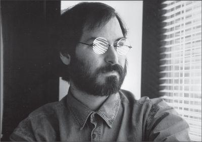

Steve Jobs, 1996
When Jobs unveiled the NeXT computer in 1988, there was a burst of excitement. That fizzled when the computer finally went on sale the following year. Jobs’s ability to dazzle, intimidate, and spin the press began to fail him, and there was a series of stories on the company’s woes. “NeXT is incompatible with other computers at a time when the industry is moving toward interchangeable systems,” Bart Ziegler of Associated Press reported. “Because relatively little software exists to run on NeXT, it has a hard time attracting customers.”
当乔布斯1988年首度推出NeXT计算机时，引起了热烈反响。可是到第二年计算机最终上市时，市场热情却退去了。乔布斯那种让媒体眼花缭乱、心生敬畏、趋之若鹜的才能开始失效，负面新闻也层出不穷。“NeXT跟其他计算机不兼容，而当时，这个行业正向操作系统可互换的方向发展，”美联社记者巴特·齐格勒（BartZiegler）报道说，“因为相对来说，可以在NeXT上使用的现有软件很少，所以它很难吸引消费者。”
NeXT tried to reposition itself as the leader in a new category, personal workstations, for people who wanted the power of a workstation and the friendliness of a personal computer. But those customers were by now buying them from fast-growing Sun Microsystems. Revenues for NeXT in 1990 were $28 million; Sun made $2.5 billion that year. IBM abandoned its deal to license the NeXT software, so Jobs was forced to do something against his nature: Despite his ingrained belief that hardware and software should be integrally linked, he agreed in January 1992 to license the NeXTSTEP operating system to run on other computers.
NeXT试图将自己重新定位为一个新产品类型——个人工作站的领跑者，目标用户是那些希望兼顾工作站的强大功能与个人计算机的友好性的人。但是这类消费者当时已经从快速发展的Sun公司买到了这样的产品。NeXT在1990年的收入是2800万美元，而同年Sun公司的收入是25亿美元。IBM放弃了向NeXT授权软件的协议，所以乔布斯被迫做了一件违背他本性的事情：虽然他根深蒂固地认为硬件和软件应该是一个不可分割的整体，但是在1992年1月，他同意授权NeXTSTEP操作系统在其他品牌的计算机上运行。
One surprising defender of Jobs was Jean-Louis Gassée, who had bumped elbows with Jobs when he replaced him at Apple and subsequently been ousted himself. He wrote an article extolling the creativity of NeXT products. “NeXT might not be Apple,” Gassée argued, “but Steve is still Steve.” A few days later his wife answered a knock on the door and went running upstairs to tell him that Jobs was standing there. He thanked Gassée for the article and invited him to an event where Intel’s Andy Grove would join Jobs in announcing that NeXTSTEP would be ported to the IBM/Intel platform. “I sat next to Steve’s father, Paul Jobs, a movingly dignified individual,” Gassée recalled. “He raised a difficult son, but he was proud and happy to see him onstage with Andy Grove.”
乔布斯当时一个出乎意料的维护者竟是让-路易·加西，他曾经跟乔布斯在苹果发生摩檫，后来被逐出苹果。他写了一篇文章称赞NeXT产品是多么具有创造性。“NeXT也许不是苹果，”加西说，“但史蒂夫还是史蒂夫。”几天之后，加西家来了一位访客，加西的妻子跑上楼去告诉他，史蒂夫在楼下。乔布斯感谢加西写了那篇文章，并邀请他参加一个活动，届时英特尔的安迪·格鲁夫将和乔布斯一同宣布，NeXTSTEP将被植入IBM/英特尔平台上。“我当时坐在史蒂夫的父亲保罗·乔布斯旁边，他备受尊重。”加西回忆说，“他带大儿子很不容易。看到史蒂夫跟安迪·格鲁夫站在台上，他是那么自豪和髙兴。”
A year later Jobs took the inevitable subsequent step: He gave up making the hardware altogether. This was a painful decision, just as it had been when he gave up making hardware at Pixar. He cared about all aspects of his products, but the hardware was a particular passion. He was energized by great design, obsessed over manufacturing details, and would spend hours watching his robots make his perfect machines. But now he had to lay off more than half his workforce, sell his beloved factory to Canon (which auctioned off the fancy furniture), and satisfy himself with a company that tried to license an operating system to manufacturers of uninspired machines.
一年以后，乔布斯不可避免地改变了策略；彻底放弃硬件的制造。这是一个痛苦的决定，一如他当年在皮克斯放弃硬件制造那样。他关注产品的方方面面，但硬件才是他的热情所在。他为出色的设计心潮藤湃，痴迷于生产细节，会花上好几个小时注视着他的机器人为他制造完美的产品。但现在，他不得不解雇一半以上的人力，把他钟爱的工厂卖给佳能（佳能拍卖掉了那些时尚的家具），留得一家聊以慰藉的公司，把操作系统授权给那些生产死板机器的制造商。
By the mid-1990s Jobs was finding some pleasure in his new family life and his astonishing triumph in the movie business, but he despaired about the personal computer industry. “Innovation has virtually ceased,” he told Gary Wolf of Wired at the end of 1995. “Microsoft dominates with very little innovation. Apple lost. The desktop market has entered the dark ages.”
到20世纪90年代中期，乔布斯在他新的家庭生活和在电影产业的惊人成功中找到了一些快乐，但是却对个人计算机产业备感失望。“创新实际上已经停止，”1995年底他对《连线》杂志的加里·沃尔夫（GaryWolf）这样说，“微软占据了市场，但几乎没有创新。苹果输了。台式电脑市场进入了黑暗时代。”
He was also gloomy in an interview with Tony Perkins and the editors of Red Herring. First, he displayed the “Bad Steve” side of his personality. Soon after Perkins and his colleagues arrived, Jobs slipped out the back door “for a walk,” and he didn’t return for forty-five minutes. When the magazine’s photographer began taking pictures, he snapped at her sarcastically and made her stop. Perkins later noted, “Manipulation, selfishness, or downright rudeness, we couldn’t figure out the motivation behind his madness.” When he finally settled down for the interview, he said that even the advent of the web would do little to stop Microsoft’s domination. “Windows has won,” he said. “It beat the Mac, unfortunately, it beat UNIX, it beat OS/2. An inferior product won.”
同一时期，他在接受安东尼·帕金斯（AnthonyPerkins）和《红緋鱼》杂志（RedHerring）几位编辑采访时，也表现得阴郁沮丧。一上来，他就展示出人格中“坏脾气史蒂夫”的那一面。帕金斯和他的同事们刚到达不久，乔布斯就从后门溜出去“散步”，45分钟都没有回来。当杂志的摄影师开始拍照时，他又嚷嚷着讽刺挖苦，迫使她停下来。帕金斯后来写道：“操纵欲、自私、毫不掩饰的粗鲁，我们搞不明白他这些疯狂举动背后的动机是什么。”等他终于坐下来接受采访时，他说，即使是网络的发展也难以阻挡微软的主导地位。“Windows赢了，”他说，“很不幸，它打败了Mac，打败了Unix,打败了OS/2。一个低劣产品胜出了。
NeXT在销售软硬件一体产品方面的失败，带来了对乔布斯整个理念的质疑。“我们犯了一个错误，即试图复制苹果的模式，制造整个设备。”他在1995年说，“我想我们应该意识到世界正在改变，应该马上转型为一家软件公司。”虽然他努力尝试，但他就是不能为此而兴奋起来。他本来想制造出色的端到端一体化的产品让消费者喜爱，可是现在却陷入了这样一个企业软件销售业务里，目标用户是那些会把NeXT软件安装到各种不同的硬件平台上的公司。“我的心不在这儿。”他后来悲哀地说，“不能面向个人销售产品让我很沮丧。我来到这个世界上，不是为了卖企业产品，不是为了把软件授权给别人装在那些蹩脚的硬件里。我从来都不喜欢这样。”
注释：
①《再度降临》（TheSecondComing）是爱尔兰著名诗人叶芝的一首诗作，“何等野兽，终于等到它的时辰”是其中一行诗句。
For a few years after Jobs was ousted, Apple was able to coast comfortably with a high profit margin based on its temporary dominance in desktop publishing. Feeling like a genius back in 1987, John Sculley had made a series of proclamations that nowadays sound embarrassing. Jobs wanted Apple “to become a wonderful consumer products company,” Sculley wrote. “This was a lunatic plan. . . . Apple would never be a consumer products company. . . . We couldn’t bend reality to all our dreams of changing the world. . . . High tech could not be designed and sold as a consumer product.”
在乔布斯出局后的几年，苹果公司由于暂时统领桌面排版系统，还可以舒服地享受很髙的利润率。当时自我感觉有如天才的约翰·斯卡利，于1987年发表了一系列今天看起来颇为尷尬的宣言。乔布斯希望苹果“成为一家出色的消费品公司”，斯卡利写道，“这是个愚蠢的计划……苹果永远不会是一家消费品公司……我们不能因为我们改变世界的梦想就扭曲现实……高科技不能作为消费品去设计和销售”。
Jobs was appalled, and he became angry and contemptuous as Sculley presided over a steady decline in market share for Apple in the early 1990s. “Sculley destroyed Apple by bringing in corrupt people and corrupt values,” Jobs later lamented. “They cared about making money—for themselves mainly, and also for Apple—rather than making great products.” He felt that Sculley’s drive for profits came at the expense of gaining market share. “Macintosh lost to Microsoft because Sculley insisted on milking all the profits he could get rather than improving the product and making it affordable.” As a result, the profits eventually disappeared.
乔布斯格外震惊。20世纪90年代初，苹果在斯卡利的领导下市场份额和收入持续下降，他对斯卡利的愤怒和蔑视也与日俱增。“斯卡利引进下三滥的人和下三滥的价值观，把苹果给毁了。”乔布斯后来悲叹，“他们只在乎如何赚钱——主要为他们自己，同时也为苹果——而不在乎如何制造出色的产品。”乔布斯感觉斯卡利对利润的追逐是以牺性市场份额为代价的。“麦金塔之所以输给微软，是因为斯卡利坚持榨取每一分利润，而不是努力改进产品和降低价格。”
It had taken Microsoft a few years to replicate Macintosh’s graphical user interface, but by 1990 it had come out with Windows 3.0, which began the company’s march to dominance in the desktop market. Windows 95, which was released in 1995, became the most successful operating system ever, and Macintosh sales began to collapse. “Microsoft simply ripped off what other people did,” Jobs later said. “Apple deserved it. After I left, it didn’t invent anything new. The Mac hardly improved. It was a sitting duck for Microsoft.”
微软用了几年时间模仿麦金塔的图形用户界面，到1990年就已经推出了Windows3.0系统，从此走上了统领台式电脑市场的征途。1995年8月发布的Windows95成为有史以来最成功的操作系统，而麦金塔的销售量开始暴跌。“微软只是剽窃他人的成果，然后坚持下去，利用它对IBM兼容机的控制。”乔布斯后来说，“苹果也是活该。我离开后，它没有发明任何新东西。Mac几乎没有改进。面对微软，它只能坐以待毙。”
His frustration with Apple was evident when he gave a talk to a Stanford Business School club at the home of a student, who asked him to sign a Macintosh keyboard. Jobs agreed to do so if he could remove the keys that had been added to the Mac after he left. He pulled out his car keys and pried off the four arrow cursor keys, which he had once banned, as well as the top row of F1, F2, F3 . . . function keys. “I’m changing the world one keyboard at a time,” he deadpanned. Then he signed the mutilated keyboard.
乔布斯对苹果的沮丧是显而易见的。有一次，他在一个学生家里给斯坦福商学院俱乐部成员演讲，那个学生请他在一个麦金塔的键盘上签名。乔布斯说，如果能把他离开苹果后加到Mac上的键都拿掉，就可以签名。他拿出汽车钥匙，抠掉了他曾经禁止使用的四个箭头光标按键，还有最上面一行的“F1、F2、F3……”等功能键。“我在一次一个键盘地改变世界。”他面无表情地说。然后他在残缺不全的键盘上签了名。
During his 1995 Christmas vacation in Kona Village, Hawaii, Jobs went walking along the beach with his friend Larry Ellison, the irrepressible Oracle chairman. They discussed making a takeover bid for Apple and restoring Jobs as its head. Ellison said he could line up $3 billion in financing: “I will buy Apple, you will get 25% of it right away for being CEO, and we can restore it to its past glory.” But Jobs demurred. “I decided I’m not a hostile-takeover kind of guy,” he explained. “If they had asked me to come back, it might have been different.”
1995年圣诞节，在夏威夷的康娜度假村休假时，乔布斯跟他的朋友甲骨文强势的董事长拉里·埃利森在海滩散步。他们讨论收购苹果，然后让乔布斯回去重掌大局。埃利森说他可以安排30亿美元的融资。“我会买下苹果，你作为CEO会立即获得25%的股份，我们可以重现它过去的辉煌。”但是乔布斯却表示反对。“我认定我不是那种能做恶意收购的人，”他解释说，“如果他们请我回去，那就不一样了。”
By 1996 Apple’s share of the market had fallen to 4% from a high of 16% in the late 1980s. Michael Spindler, the German-born chief of Apple’s European operations who had replaced Sculley as CEO in 1993, tried to sell the company to Sun, IBM, and Hewlett-Packard. That failed, and he was ousted in February 1996 and replaced by Gil Amelio, a research engineer who was CEO of National Semiconductor. During his first year the company lost $1 billion, and the stock price, which had been $70 in 1991, fell to $14, even as the tech bubble was pushing other stocks into the stratosphere.
到1996年，苹果的市场份额已经从80年代末的高达16%下降到4%。1993年取代斯卡利担任苹果CEO的迈克尔·斯平德勒（MichaelSpixidler），试图把公司卖给太阳微系统、IBM和惠普。失败后，斯平德勒在1996年2月被吉尔·阿梅里奥（GilAmelio）取代。吉尔是一位研发工程师，曾任国家半导体公司的CEO。在他任期的第一年，苹果公司亏损了10亿美元，股票价格从1991年时的70美元暴跌到14美元，而当时，高科技泡沫正把其他股票的价格推向史无前例的高点。
Amelio was not a fan of Jobs. Their first meeting had been in 1994, just after Amelio was elected to the Apple board. Jobs had called him and announced, “I want to come over and see you.” Amelio invited him over to his office at National Semiconductor, and he later recalled watching through the glass wall of his office as Jobs arrived. He looked “rather like a boxer, aggressive and elusively graceful, or like an elegant jungle cat ready to spring at its prey.” After a few minutes of pleasantries—far more than Jobs usually engaged in—he abruptly announced the reason for his visit. He wanted Amelio to help him return to Apple as the CEO. “There’s only one person who can rally the Apple troops,” Jobs said, “only one person who can straighten out the company.” The Macintosh era had passed, Jobs argued, and it was now time for Apple to create something new that was just as innovative.
阿梅里奥并不是乔布斯的粉丝。他们第一次见面是在1994年，当时阿梅里奥刚刚被选入苹果的董事会。乔布斯给他打电话说，“我想过去见你。”阿梅里奥于是邀请他到国家半导体公司的办公室。后来阿梅里奥回忆了当时透过办公室的玻璃墙看着乔布斯到来的情景——他看起来“像个拳击手，富有攻击性又带着难以捉摸的优雅，或者说像一只高贵的丛林猫，时刻准备扑向猎物”。阿梅里奥后来记录道。他们寒暄了几分钟——这已经远远超过了乔布斯习惯的长度，然后乔布斯突然宣布了他的来意。他想让阿梅里奥帮助他回到苹果担任CEO。“只有一个人可以重整苹果大军，”乔布斯说，“只有一个人可以带领公司走出困境。”乔布斯认为麦金塔的时代已经过去，是时候创造一些新的并具有创新性的东西了。
“If the Mac is dead, what’s going to replace it?” Amelio asked. Jobs’s reply didn’t impress him. “Steve didn’t seem to have a clear answer,” Amelio later said. “He seemed to have a set of one-liners.” Amelio felt he was witnessing Jobs’s reality distortion field and was proud to be immune to it. He shooed Jobs unceremoniously out of his office.
“如果Mac已死，什么会代替它？”阿梅里奥问。乔布斯的回答没能打动他。“史蒂夫似乎没有一个清晰的答案，”阿梅里奥后来说，“他好像是有一些零散的想法。”阿梅里奥认为他正在目睹乔布斯的现实扭曲力场，并且很自豪没有受其影响。他不客气地把乔布斯请出了他的办公室。
By the summer of 1996 Amelio realized that he had a serious problem. Apple was pinning its hopes on creating a new operating system, called Copland, but Amelio had discovered soon after becoming CEO that it was a bloated piece of vaporware that would not solve Apple’s needs for better networking and memory protection, nor would it be ready to ship as scheduled in 1997. He publicly promised that he would quickly find an alternative. His problem was that he didn’t have one.
到1996年夏天，阿梅里奥认识到他面临着一个严重的问题。苹果公司把希望寄托在创造一个叫Copland的新操作系统上，但是阿梅里奥成为CEO后不久就发现，这只是一个纸上谈兵的东西，既不能实现苹果所需要的更好的网络和内存保护，也无法如期在1997年交货。阿梅里奥公开承诺，他将很快找到一个替代品。但问题是，他没有替代品。
So Apple needed a partner, one that could make a stable operating system, preferably one that was UNIX-like and had an object-oriented application layer. There was one company that could obviously supply such software—NeXT—but it would take a while for Apple to focus on it.
所以苹果需要一个合作伙伴提供稳定的操作系统，最好还是像Unix那样的操作系统，具备面向对象的应用程序。当时，有一家公司显然可以提供这样的软件——NeXT——但是还要过一段时间苹果才会关注到这一点。
Apple first homed in on a company that had been started by Jean-Louis Gassée, called Be. Gassée began negotiating the sale of Be to Apple, but in August 1996 he overplayed his hand at a meeting with Amelio in Hawaii. He said he wanted to bring his fifty-person team to Apple, and he asked for 15% of the company, worth about $500 million. Amelio was stunned. Apple calculated that Be was worth about $50 million. After a few offers and counteroffers, Gassée refused to budge from demanding at least $275 million. He thought that Apple had no alternatives. It got back to Amelio that Gassée said, “I’ve got them by the balls, and I’m going to squeeze until it hurts.” This did not please Amelio.
苹果先是锁定了一家由让-路易·加西创建的公司Be。加西开始探讨把Be卖给苹果，但是1996年8月在夏威夷跟阿梅里奥开会时，他过于自以为是了。他说他想带50人的团队加入苹果，要公司15%的股杈，价值大约5亿美元。阿梅里奥听罢目瞪口呆。苹果当时对Be的估值只有5000万美元。经过几番讨价还价，加西无法接受低于2.75亿美元的报价。他以为苹果没有其他选择了。加西对别人说，“我拿住了他们的要害，我要一直捏到他们疼为止。”这话传到阿梅里奥耳朵里，那感觉可不太好。
Apple’s chief technology officer, Ellen Hancock, argued for going with Sun’s UNIX-based Solaris operating system, even though it did not yet have a friendly user interface. Amelio began to favor using, of all things, Microsoft’s Windows NT, which he felt could be rejiggered on the surface to look and feel just like a Mac while being compatible with the wide range of software available to Windows users. Bill Gates, eager to make a deal, began personally calling Amelio.
苹果的首席技术官埃伦·汉考克（EllenHancock）赞成采用Sun公司基于Unix的Solaris操作系统，尽管它还没有一个友好的用户界面。而阿梅里奥居然开始倾向于使用微软的WindowsNT操作系统，他认为可以做一些外观上的改动，使之看起来感觉就像个Mac，又能跟Windows用户可以使用的大量软件相兼容。比尔·盖茨非常渴望达成这项合作，开始亲自给阿梅里奥打电话。
There was, of course, one other option. Two years earlier Macworld magazine columnist (and former Apple software evangelist) Guy Kawasaki had published a parody press release joking that Apple was buying NeXT and making Jobs its CEO. In the spoof Mike Markkula asked Jobs, “Do you want to spend the rest of your life selling UNIX with a sugarcoating, or change the world?” Jobs responded, “Because I’m now a father, I needed a steadier source of income.” The release noted that “because of his experience at Next, he is expected to bring a newfound sense of humility back to Apple.” It also quoted Bill Gates as saying there would now be more innovations from Jobs that Microsoft could copy. Everything in the press release was meant as a joke, of course. But reality has an odd habit of catching up with satire.
当然，还有另外一个选择。两年前，《Macworld》杂志的专栏作家（前苹果软件布道者）盖伊·川崎（GuyKawasaki）曾经发表了一篇模拟新闻通稿，开玩笑说苹果即将收购NeXT然后让乔布斯担任CEO。文中模仿迈克·马库拉问乔布斯：“你想把下半辈子用来卖裹着层糖衣的Unix，还是用来改变世界？”乔布斯同意这项收购并表示：“我现在是个父亲了，我需要一个稳定的收入来源。”文章评论说“由于他在NeXT的经历，人们期待他会把一种从未有过的谦卑感带回苹果”。文章还拟引了比尔·盖茨的话说，现在会有更多乔布斯的创新可以供微软抄袭了。当时这篇新闻稿里所有的话都是玩笑。但是现实总有一个奇怪的习惯，要追上嘲讽的步伐。
“Does anyone know Steve well enough to call him on this?” Amelio asked his staff. Because his encounter with Jobs two years earlier had ended badly, Amelio didn’t want to make the call himself. But as it turned out, he didn’t need to. Apple was already getting incoming pings from NeXT. A midlevel product marketer at NeXT, Garrett Rice, had simply picked up the phone and, without consulting Jobs, called Ellen Hancock to see if she might be interested in taking a look at its software. She sent someone to meet with him.
“谁跟史蒂夫的关系够好，能给他打个电话？”阿梅里奥问他的员工们。由于跟乔布斯两年前的会面不欢而散，阿梅里奥不想亲自打这个电话。但是结果表明，他的确不必。NeXT已经开始向苹果伸出了橄榄枝。NeXT公司的一位中级产品推销员加勒特·赖斯（GarrettRice），没有请示乔布斯，就直接拿起电话打给了埃伦·汉考克，问她是否有兴趣看一下NeXT的软件。汉考克派人去跟他见面。
By Thanksgiving of 1996 the two companies had begun midlevel talks, and Jobs picked up the phone to call Amelio directly. “I’m on my way to Japan, but I’ll be back in a week and I’d like to see you as soon as I return,” he said. “Don’t make any decision until we can get together.” Amelio, despite his earlier experience with Jobs, was thrilled to hear from him and entranced by the possibility of working with him. “For me, the phone call with Steve was like inhaling the flavors of a great bottle of vintage wine,” he recalled. He gave his assurance he would make no deal with Be or anyone else before they got together.
到1996年感恩节，两家公司已经开始了中层级别的磋商，乔布斯直接给阿梅里奥打了个电话。“我要去日本，但是我一周内就回来，我一回来就见你。”乔布斯说，“我们见面前你不要作任何决定。”虽然与乔布斯有段不愉快的过去，但阿梅里奥接到这个电话还是很振奋，为跟他合作的可能性感到惊喜。“对我来说，接到史蒂夫的电话，那感觉就像是在闻一瓶极品葡萄酒的醇香。”他回忆说。他答应在他们俩见面之前，他不会跟Be或任何人敲定交易。
For Jobs, the contest against Be was both professional and personal. NeXT was failing, and the prospect of being bought by Apple was a tantalizing lifeline. In addition, Jobs held grudges, sometimes passionately, and Gassée was near the top of his list, despite the fact that they had seemed to reconcile when Jobs was at NeXT. “Gassée is one of the few people in my life I would say is truly horrible,” Jobs later insisted, unfairly. “He knifed me in the back in 1985.” Sculley, to his credit, had at least been gentlemanly enough to knife Jobs in the front.
对于乔布斯来说，跟Be的竞争亦公亦私。NeXT已在走下坡路，被苹果收购是一根救命稻草。另外，乔布斯是很记仇的，加西在他心里几乎是最大的仇人，排名甚至比斯卡利还高。“加西真是个邪恶的家伙，”乔布斯后来说，“他是我这辈子认为真正邪恶的少数几个人之一。1985年他在背后捅了我一刀。”而斯卡利至少还是个绅士，是从前面捅他刀子的。
On December 2, 1996, Steve Jobs set foot on Apple’s Cupertino campus for the first time since his ouster eleven years earlier. In the executive conference room, he met Amelio and Hancock to make the pitch for NeXT. Once again he was scribbling on the whiteboard there, this time giving his lecture about the four waves of computer systems that had culminated, at least in his telling, with the launch of NeXT. He was at his most seductive, despite the fact that he was speaking to two people he didn’t respect. He was particularly adroit at feigning modesty. “It’s probably a totally crazy idea,” he said, but if they found it appealing, “I’ll structure any kind of deal you want—license the software, sell you the company, whatever.” He was, in fact, eager to sell everything, and he pushed that approach. “When you take a close look, you’ll decide you want more than my software,” he told them. “You’ll want to buy the whole company and take all the people.”
1996年12月2日，史蒂夫·乔布斯在时隔11年后，再次踏上了苹果位于库比蒂诺的土地。在管理层会议室，他向阿梅里奥和汉考克展示了NeXT。又一次，他在那块白板上狂写乱画，而这次他是在讲计算机系统的4次浪潮，以及NeXT作为这次浪潮的顶点出现。他认为BeOS系统是不完整的，也没有NeXT那么精密髙级。他尽其所能吸引着听众，尽管事实上他面对的是他并不尊重的两个人。他尤其擅长伪装谦逊。“可能这是个完全疯狂的想法。”他说，但是如果他们感兴趣，“我愿意设计任何一种你们想要的合作方式——授权软件，把公司卖给你们——哪种方式都行。”事实上，他是渴望把公司全部卖掉，因此他着力推荐这个方式。“如果你们了解得更多，你们会决定想要的不仅仅是我的软件，”他对他们说，“你们会想收购整个公司并收编所有员工。”
A few weeks later Jobs and his family went to Hawaii for Christmas vacation. Larry Ellison was also there, as he had been the year before. “You know, Larry, I think I’ve found a way for me to get back into Apple and get control of it without you having to buy it,” Jobs said as they walked along the shore. Ellison recalled, “He explained his strategy, which was getting Apple to buy NeXT, then he would go on the board and be one step away from being CEO.” Ellison thought that Jobs was missing a key point. “But Steve, there’s one thing I don’t understand,” he said. “If we don’t buy the company, how can we make any money?” It was a reminder of how different their desires were. Jobs put his hand on Ellison’s left shoulder, pulled him so close that their noses almost touched, and said, “Larry, this is why it’s really important that I’m your friend. You don’t need any more money.”
“你看，拉里，我想我找到了一种方式重回苹果并获得控制杈，而且你也不用去收购它。”在夏威夷的康娜度假村散步时，乔布斯这样对埃利森说。那年他们一起去那儿过圣诞节。埃利森回忆说：“他解释了他的策略，即促成苹果收购NeXT,然后他就可以进入董事会，离CEO的位子仅一步之遥。”埃利森认为乔布斯忽视了一个关键问题。“但是史蒂夫，有件事我不明白，”他说，“如果我们不收购公司，我们怎么赚钱呢？”这再次显示了他们的欲求是多么不同。乔布斯把手搭在埃利森的左肩上，把他拉到自己跟前，他们的鼻尖几乎要碰上了，他说：“拉里，这就是为什么有我做你的朋友非常重要。你不需要更多钱了。”
Ellison recalled that his own answer was almost a whine: “Well, I may not need the money, but why should some fund manager at Fidelity get the money? Why should someone else get it? Why shouldn’t it be us?”
埃利森还记得自己当时嘀咕着回答，“可能我是不需要这些钱，可是为什么要让富达（Fidelity）的那些基金经理赚到这些钱呢？为什么要让别人赚？为什么不应该是我们？”
“I think if I went back to Apple, and I didn’t own any of Apple, and you didn’t own any of Apple, I’d have the moral high ground,” Jobs replied.
“我想如果我回到苹果，而我不持有苹果的股份，你也不持有苹果的股份，我就会占据道德高地。”乔布斯回答说。
“Steve, that’s really expensive real estate, this moral high ground,” said Ellison. “Look, Steve, you’re my best friend, and Apple is your company. I’ll do whatever you want.” Although Jobs later said that he was not plotting to take over Apple at the time, Ellison thought it was inevitable. “Anyone who spent more than a half hour with Amelio would realize that he couldn’t do anything but self-destruct,” he later said.
“史蒂夫，这块道德高地可真是块昂贵的地产。”埃利森说，“你瞧，史蒂夫，你是我最好的朋友，而苹果是你的公司。我会听你的。”虽然乔布斯后来说他当时没有计划夺回苹果，但是埃利森觉得那是不可避免的。“任何人只要跟阿梅里奥聊上半个小时就会认识到，他除了自我毁灭干不了别的。”他后来说。
The big bakeoff between NeXT and Be was held at the Garden Court Hotel in Palo Alto on December 10, in front of Amelio, Hancock, and six other Apple executives. NeXT went first, with Avie Tevanian demonstrating the software while Jobs displayed his hypnotizing salesmanship. They showed how the software could play four video clips on the screen at once, create multimedia, and link to the Internet. “Steve’s sales pitch on the NeXT operating system was dazzling,” according to Amelio. “He praised the virtues and strengths as though he were describing a performance of Olivier as Macbeth.”
NeXT和Be的终极对决于12月10日在帕洛奥图的花园庭院酒店（GardenCourtHotel）举行，评委包括阿梅里奥、汉考克和另外6位苹果髙管。NeXT先上，由阿维·泰瓦尼安展示软件，而乔布斯尽情发挥他那催眠术般的销售技巧。他们展示了这套软件如何在屏幕上同时播放4段录像，如何制作多媒体文件，如何连接互联网。“史蒂夫推销起NeXT操作系统来让人眼花缭乱，”阿梅里奥说，“他赞美着那些功能和强项，就好像他在描述奥利弗·斯通饰演麦克白是如何出色。”
Gassée came in afterward, but he acted as if he had the deal in his hand. He provided no new presentation. He simply said that the Apple team knew the capabilities of the Be OS and asked if they had any further questions. It was a short session. While Gassée was presenting, Jobs and Tevanian walked the streets of Palo Alto. After a while they bumped into one of the Apple executives who had been at the meetings. “You’re going to win this,” he told them.
之后加西上场，他的表现就像是胜券在握一样。他没有作新的演示，只是说苹果团队知道BeOS的性能，问是不是还有其他问题。整个过程很短。在加西作推介时，乔布斯和泰瓦尼安在帕洛奧图的街上散步。过了一会儿，他们碰上了之前在评选现场的一位苹果高管。“你们会臝的。”他告诉他们。
Tevanian later said that this was no surprise: “We had better technology, we had a solution that was complete, and we had Steve.” Amelio knew that bringing Jobs back into the fold would be a double-edged sword, but the same was true of bringing Gassée back. Larry Tesler, one of the Macintosh veterans from the old days, recommended to Amelio that he choose NeXT, but added, “Whatever company you choose, you’ll get someone who will take your job away, Steve or Jean-Louis.”
泰瓦尼安后来说，那并不出乎意料。“我们有更好的技术，我们有完整的解决方案，而乱我们有史蒂夫。”阿梅里奥知道，让乔布斯重回苹果是把双刃剑，但是让加西回来也面临同样的问题。一位早年间麦金塔团队的老员工拉里·特斯勒向阿梅里奥建议选择NeXT，但是他加了一旬：“无论你选择哪家公司，你都会面临着自己的地位被人取代——史蒂夫或让-路易。”
Amelio opted for Jobs. He called Jobs to say that he planned to propose to the Apple board that he be authorized to negotiate a purchase of NeXT. Would he like to be at the meeting? Jobs said he would. When he walked in, there was an emotional moment when he saw Mike Markkula. They had not spoken since Markkula, once his mentor and father figure, had sided with Sculley there back in 1985. Jobs walked over and shook his hand.
阿梅里奥选择了乔布斯。他给他打电话说，自己计划向苹果董事会提请授权他谈判NeXT的收购事宜。他问乔布斯是否愿意参加会议，乔布斯说愿意。当乔布斯走进会议室，看到迈克·马库拉那一刻，场面很是动情。马库拉曾经是他的导师，就像他的父亲一样，但自从他1985年站在斯卡利一边之后，他们就再也没讲过话。乔布斯走过去跟他握手。然后，乔布斯在没有泰瓦尼安和其他任何支持的情况下，自己作了NeXT演示。最终，整个董事会被完全征服了。
Jobs invited Amelio to come to his house in Palo Alto so they could negotiate in a friendly setting. When Amelio arrived in his classic 1973 Mercedes, Jobs was impressed; he liked the car. In the kitchen, which had finally been renovated, Jobs put a kettle on for tea, and then they sat at the wooden table in front of the open-hearth pizza oven. The financial part of the negotiations went smoothly; Jobs was eager not to make Gassée’s mistake of overreaching. He suggested that Apple pay $12 a share for NeXT. That would amount to about $500 million. Amelio said that was too high. He countered with $10 a share, or just over $400 million. Unlike Be, NeXT had an actual product, real revenues, and a great team, but Jobs was nevertheless pleasantly surprised at that counteroffer. He accepted immediately.
乔布斯邀请阿梅里奥去他在帕洛奥图的家里谈判，这样可以有个友好的环境。阿梅里奥开着经典的1973年款奔驰车出现，乔布斯对此印象深刻。他喜欢这部车。在装修过的厨房里，乔布斯烧水泡茶，然后他们在比萨炉前的木头餐桌边落座。财务部分的谈判进行得很顺利，乔布斯想避免加西所犯的狮子大开口的错误。他建议苹果以每股12美元的价格收购NeXT,总价值将达5亿美元。阿梅里奥说价格太髙了。他还价到每股10美元，总价4亿美元。跟Be不同的是，NeXT有实际的产品、确实的收入，以及出色的团队，但尽管如此，乔布斯还是对这个报价感到惊喜。他立即接受了。
One sticking point was that Jobs wanted his payout to be in cash. Amelio insisted that he needed to “have skin in the game” and take the payout in stock that he would agree to hold for at least a year. Jobs resisted. Finally, they compromised: Jobs would take $120 million in cash and $37 million in stock, and he pledged to hold the stock for at least six months.
谈判的一个胶着点，是乔布斯希望苹果付给他现金。阿梅里奥坚持说他应该与公司共存亡，只能付给他股票，而且他要同意持股至少一年。乔布斯不愿意。最后，双方都作出了让步。乔布斯将拿到1.2亿美元的现金和价值3700万美元的股票，并承诺持有这些股票最少6个月。
As usual Jobs wanted to have some of their conversation while taking a walk. While they ambled around Palo Alto, he made a pitch to be put on Apple’s board. Amelio tried to deflect it, saying there was too much history to do something like that too quickly. “Gil, that really hurts,” Jobs said. “This was my company. I’ve been left out since that horrible day with Sculley.” Amelio said he understood, but he was not sure what the board would want. When he was about to begin his negotiations with Jobs, he had made a mental note to “move ahead with logic as my drill sergeant” and “sidestep the charisma.” But during the walk he, like so many others, was caught in Jobs’s force field. “I was hooked in by Steve’s energy and enthusiasm,” he recalled.
一如既往地，乔布斯喜欢在散步时进行一些谈话。当他们在帕洛奥图闲逛时，他提出希望被纳入苹果的董事会。阿梅里奥试图劝阻他，说有太多历史问题，这样做为时尚早。“吉尔，这太伤人了，”乔布斯说，“这曾是我的公司。而自从跟斯卡利交恶，我就被忽略不计了。”阿梅里奥说他能理解，但是他不敢肯定董事会是什么态度。在跟乔布斯谈判之前，阿梅里奥巳经暗下决心，“我要按照自己的逻辑往前推进”并且“要回避他的人格魅力”。但是在散步过程中，跟其他很多人一样，他完全陷入了乔布斯的磁场。“我被史蒂夫的旺盛精力和热情吸引住了。”他回忆说。
After circling the long blocks a couple of times, they returned to the house just as Laurene and the kids were arriving home. They all celebrated the easy negotiations, then Amelio rode off in his Mercedes. “He made me feel like a lifelong friend,” Amelio recalled. Jobs indeed had a way of doing that. Later, after Jobs had engineered his ouster, Amelio would look back on Jobs’s friendliness that day and note wistfully, “As I would painfully discover, it was merely one facet of an extremely complex personality.”
在街区里转了几圈之后，他们回到史蒂夫家，正赶上劳伦和孩子们回来。他们一起庆祝谈判顺利，然后阿梅里奥开着他的奔驰离开了。“他让我觉得就像是个一辈子的朋友了。”阿梅里奥回忆说。乔布斯的确很擅长这一手。后来，当乔布斯把他赶出苹果后，阿梅里奥回忆起那天乔布斯的友善，伤感地说，“我痛苦地发现，那只是一个极端复杂人格的一个侧面。”
After informing Gassée that Apple was buying NeXT, Amelio had what turned out to be an even more uncomfortable task: telling Bill Gates. “He went into orbit,” Amelio recalled. Gates found it ridiculous, but perhaps not surprising, that Jobs had pulled off this coup. “Do you really think Steve Jobs has anything there?” Gates asked Amelio. “I know his technology, it’s nothing but a warmed-over UNIX, and you’ll never be able to make it work on your machines.” Gates, like Jobs, had a way of working himself up, and he did so now: “Don’t you understand that Steve doesn’t know anything about technology? He’s just a super salesman. I can’t believe you’re making such a stupid decision. . . . He doesn’t know anything about engineering, and 99% of what he says and thinks is wrong. What the hell are you buying that garbage for?”
在通知加西苹果要收购NeXT之后，阿梅里奥还有一个更难完成的任务：通知比尔·盖茨。结果证明的确如此。“他勃然大怒。”阿梅里奥回忆说。乔布斯把这单生意做得这么漂亮，盖茨觉得很滑稽，但是可能并不惊讶。“你真的认为史蒂夫·乔布斯有什么真家伙吗？”盖茨问阿梅里奥，“我了解他的技术，那只是把Unix又热了热而已，而且你永远无法把它用在你的机器上。”盖茨跟乔布斯一样会越说情绪越激动，阿梅里奥回忆说，盖茨这样咆哮了两三分钟。“难道你不明白乔布斯根本不懂技术吗？他只是一个超级销售员。我真无法相信你会作出这么愚蠢的决定……他根本不懂设计，他说的想的里面99%都是错误的。你买那堆垃圾到底是为了什么？”
Years later, when I raised it with him, Gates did not recall being that upset. The purchase of NeXT, he argued, did not really give Apple a new operating system. “Amelio paid a lot for NeXT, and let’s be frank, the NeXT OS was never really used.” Instead the purchase ended up bringing in Avie Tevanian, who could help the existing Apple operating system evolve so that it eventually incorporated the kernel of the NeXT technology. Gates knew that the deal was destined to bring Jobs back to power. “But that was a twist of fate,” he said. “What they ended up buying was a guy who most people would not have predicted would be a great CEO, because he didn’t have much experience at it, but he was a brilliant guy with great design taste and great engineering taste. He suppressed his craziness enough to get himself appointed interim CEO.”
多年以后，当我向盖茨问起这件事，他已经不记得自己有那么沮丧了。他认为收购NeXT没有真正给苹果带来一个新的操作系统。“阿梅里奥为NeXT支付了一大笔钱，咱们坦率说，NeXTOS系统从来就没有真正使用过。”不过，这次收购倒是让阿维·泰瓦尼安加盟进来，他帮助改进现有的苹果操作系统，并最终融入了NeXT的核心技术。盖茨知道这次交易注定会使乔布斯重掌大权。“但这就是命运无常，”他说，“他们最后买来的是一个大多数人认为不会是个好CEO的人，因为他对此没什么经验，但是他是个才华横溢的家伙，有出色的设计品位和工程品位。他适当地压抑一下自己的疯狂，就被任命为临时CEO了。”
Despite what both Ellison and Gates believed, Jobs had deeply conflicted feelings about whether he wanted to return to an active role at Apple, at least while Amelio was there. A few days before the NeXT purchase was due to be announced, Amelio asked Jobs to rejoin Apple full-time and take charge of operating system development. Jobs, however, kept deflecting Amelio’s request.
虽然埃利森和盖茨都认为乔布斯是要夺回苹果，但是乔布斯自己却感觉很矛盾，他犹豫当阿梅里奧还在的时候到底要不要回苹果，担任一个积极的角色。在宣布收购NeXT几天前，阿梅里奥邀请乔布斯全职加入苹果，负责操作系统的开发。然而，乔布斯一直不让阿梅里奥作出任何任命。
Finally, on the day that he was scheduled to make the big announcement, Amelio called Jobs in. He needed an answer. “Steve, do you just want to take your money and leave?” Amelio asked. “It’s okay if that’s what you want.” Jobs did not answer; he just stared. “Do you want to be on the payroll? An advisor?” Again Jobs stayed silent. Amelio went out and grabbed Jobs’s lawyer, Larry Sonsini, and asked what he thought Jobs wanted. “Beats me,” Sonsini said. So Amelio went back behind closed doors with Jobs and gave it one more try. “Steve, what’s on your mind? What are you feeling? Please, I need a decision now.”
最后，在要作出这个重大宣布的当天，阿梅里奥把乔布斯请到了办公室。他需要一个答复。“史蒂夫，你是想拿了钱就走人吗？”阿梅里奥问，“如果那是你想要的，也没问题。”乔布斯没有回答，他只是看着阿梅里奥。“你想成为正式员工吗？还是做一个顾问？”乔布斯还是一言不发。阿梅里奥出去找到乔布斯的律师拉里·松西尼（LarrySomini），问他乔布斯到底想要什么。“我也不知道。”松西尼说。阿梅里奥回到办公室，关上门，又试了一次：“史蒂夫，你在想什么？你有什么感觉？拜托，我现在需要一个决定。”
“I didn’t get any sleep last night,” Jobs replied.
“Why? What’s the problem?”
“I was thinking about all the things that need to be done and about the deal we’re making, and it’s all running together for me. I’m really tired now and not thinking clearly. I just don’t want to be asked any more questions.”
Amelio said that wasn’t possible. He needed to say something.
Finally Jobs answered, “Look, if you have to tell them something, just say advisor to the chairman.” And that is what Amelio did.
“我昨晚一夜没睡。”乔布斯回答。 “为什么？出了什么事？” “我在思考所有要做的事情，还有我们这个交易，都压在了一起。我现在真的很累，想不清楚。我就是不想再被问任何问题了。” 阿梅里奧说那不可能。他总得说点儿什么。 最后，乔布斯回答说，“好吧，如果你必须要对外说点儿什么，就说是董事会主席的顾问吧。”阿梅里奥照做了。
The announcement was made that evening—December 20, 1996—in front of 250 cheering employees at Apple headquarters. Amelio did as Jobs had requested and described his new role as merely that of a part-time advisor. Instead of appearing from the wings of the stage, Jobs walked in from the rear of the auditorium and ambled down the aisle. Amelio had told the gathering that Jobs would be too tired to say anything, but by then he had been energized by the applause. “I’m very excited,” Jobs said. “I’m looking forward to get to reknow some old colleagues.” Louise Kehoe of the Financial Times came up to the stage afterward and asked Jobs, sounding almost accusatory, whether he was going to end up taking over Apple. “Oh no, Louise,” he said. “There are a lot of other things going on in my life now. I have a family. I am involved at Pixar. My time is limited, but I hope I can share some ideas.”
当晚——1996年12月20日——在苹果总部250名欢呼的员工面前，阿梅里奥宣布了这个消息。阿梅里奥按乔布斯的要求，把他的新角色描述为仅仅是兼职顾问。乔布斯没有从恻面上台，而是从礼堂后面走进来，穿过走道登上舞台。阿梅里奥之前告诉大家乔布斯可能太累了不会讲话，但是到那时乔布斯已经被掌声振奋了。“我非常激动，”他说，“我期待着重新认识一些老同事。”《金融时报》的路易丝·基欧（LouiseKehoe）之后上台向乔布斯提问，听起来几乎是指责一般，问他是否最终会接管苹果。“噢，不会的，路易丝，”他说，“现在我的生活中有很多事情。我有家庭。我要参与皮克斯的业务。我的时间是有限的，但是我希望可以分享一些想法。”
The next day Jobs drove to Pixar. He had fallen increasingly in love with the place, and he wanted to let the crew there know he was still going to be president and deeply involved. But the Pixar people were happy to see him go back to Apple part-time; a little less of Jobs’s focus would be a good thing. He was useful when there were big negotiations, but he could be dangerous when he had too much time on his hands. When he arrived at Pixar that day, he went to Lasseter’s office and explained that even just being an advisor at Apple would take up a lot of his time. He said he wanted Lasseter’s blessing. “I keep thinking about all the time away from my family this will cause, and the time away from the other family at Pixar,” Jobs said. “But the only reason I want to do it is that the world will be a better place with Apple in it.”
第二天，乔布斯开车去皮克斯。他越来越喜欢这个地方，他想让员工们知道他会继续担任总裁，并深度参与工作。但是皮克斯的员工很高兴看到他要回苹果做兼职工作；乔布斯的关注少一些可能反而会是件好事。当有重要谈判时他作用巨大，但是如果他有太多空闲时间就可能是危险的。那天到了皮克斯以后，他去拉塞特的办公室，解释说即使仅仅作为苹果的顾问，也会占用他很多时间。他说他想得到拉塞特的祝福。“我一直在想，这将导致我有很多时间不能陪伴家人，也有很多时间不能陪在另一个家——皮克斯，”乔布斯说，“但我想做这件事的唯一原因是，这个世界如果有苹果就会变得更好。”
Lasseter smiled gently. “You have my blessing,” he said.
拉塞特温和地微笑着。“我祝福你。”他说。